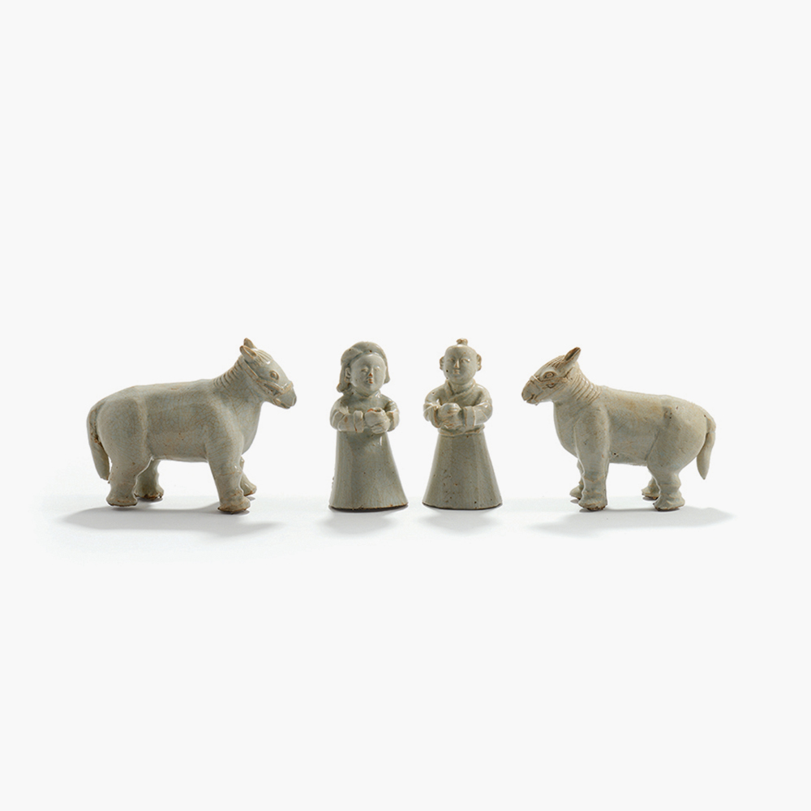
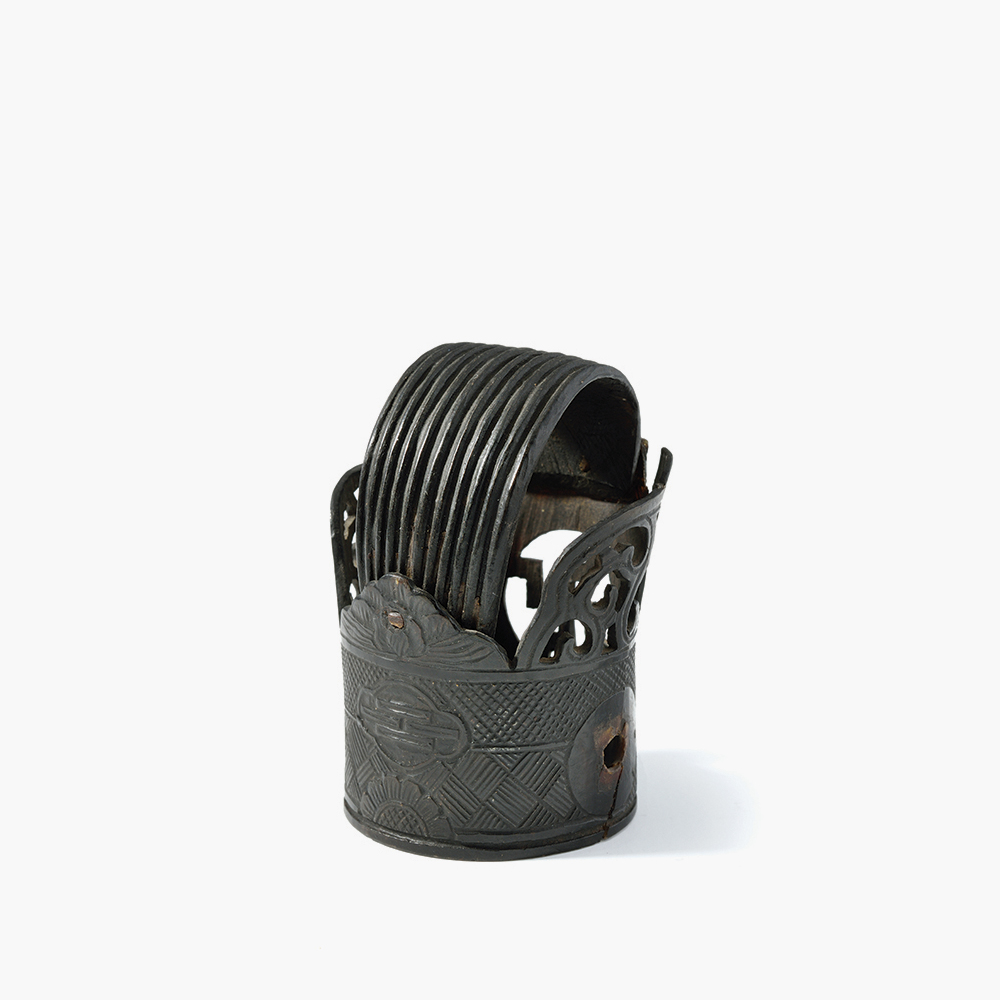

상설전시
아름다운 금수강산에서
옛 조상들은 어떻게 생활했을까?
아이의 출산과 질병을 보호해주었던 삼신할머니. 일생의 가장 영광스러운 잔치로 여겼던 회혼. 고려시대부터
지켜왔던 관혼상제. 우리 삶 속에 담겨있는 의식주 생활문화를 통해 선조들의 지혜를 살펴볼
수 있다.
한국인의 일생
아이의 출산과 질병을 보호해주었던 삼신한국인의 일생
사람은 태어나 어른이 되고, 배우자를 만나 결혼하고, 시간이 흐르면 죽음을 맞이한다. 이러한
일생의 중요한 순간을 축복하고, 나쁜 기운을 막고자 의례를 치렀다. 남자는 20세에 관례를, 여자
는 15세에 계례를 치러 어른으로 인정받았고, 혼례를 치러 가족을 구성하였다. 죽음에 따른
가족의 슬픔은 삼년상이라는 상례를 치르며 극복하고, 돌아가신 조상의 제사를 지냄으로써 자
손의 안녕을 빌었다.
- 
명기
17세기
4.3×10.3cm(인형), 13.4×10.3cm
백자
-
혼백돌
20세기
22.0×7.8×35.5cm
소나무

목기러기
20세기
25.5~45.7cm
소나무, 오동나무, 느티나무, 종이
-
예물함
19세기
76.0×44.8×36.0cm
소나무, 주칠
한국인의 의생활
우리 선조들은 예로부터 ‘의관정제’라 하여 옷과 관모를 바르게 갖추는 것이 선비의 기본 덕목
으로 생각했으며 그 사람의 됨됨이를 나타내는 수단으로 여겼다. 자연으로부터 삼베, 모시
등의 옷감과 염료를 채취해 사용한 것을 통해 우리 고유의 복식문화를 살펴볼 수 있다.

명기
17세기
4.3×10.3cm(인형), 13.4×10.3cm
백자

혼백돌
20세기
22.0×7.8×35.5cm
소나무
- 
목기러기
20세기
25.5~45.7cm
소나무, 오동나무, 느티나무, 종이
-
예물함
19세기
76.0×44.8×36.0cm
소나무, 주칠
한국인의 주생활
자연과 조화를 이루며 살아갔던 우리나라 집의 구조와 형태는 여름과 겨울에 적합한 마루와 온
돌을 만들었고, 자연에서 쉽게 얻을 수 있는 나무, 흙과 같은 건축 재료를 사용하는 등 자연의
주기적인 변화에 영향을 받아 생활하였다. 또한 자연주의에 바탕을 둔 간결하고 소박한 살림살
이를 통해 우리 조상의 지혜를 살펴 볼 수 있다.
-
명기
17세기
4.3×10.3cm(인형), 13.4×10.3cm
백자

혼백돌
20세기
22.0×7.8×35.5cm
소나무
-
목기러기
20세기
25.5~45.7cm
소나무, 오동나무, 느티나무, 종이

예물함
19세기
76.0×44.8×36.0cm
소나무, 주칠
1전시실 구성 한국인의 삶
- 01 출생
- 02 성장
- 03 결혼
- 04 결혼
- 05 상장례
- 06 감실과 제기
- 07 제례
- 08 평생도
- 09 그릇과 수저
- 10 향토음식
- 11 도시락
- 12 밥과 김치
- 13 상차림
- 14 떡과 다식
- 15 주방도구
- 16 부엌과 찬방
- 17 안방
- 18 대청
- 19 사랑방
- 20 생활용품
- 21 오방색
- 22 흑색과 백색
- 23 청색과 흑색
- 24 속옷
- 25 모자
- 26 신발과 장신구
- 27 바느질 도구
- 28 자연재료